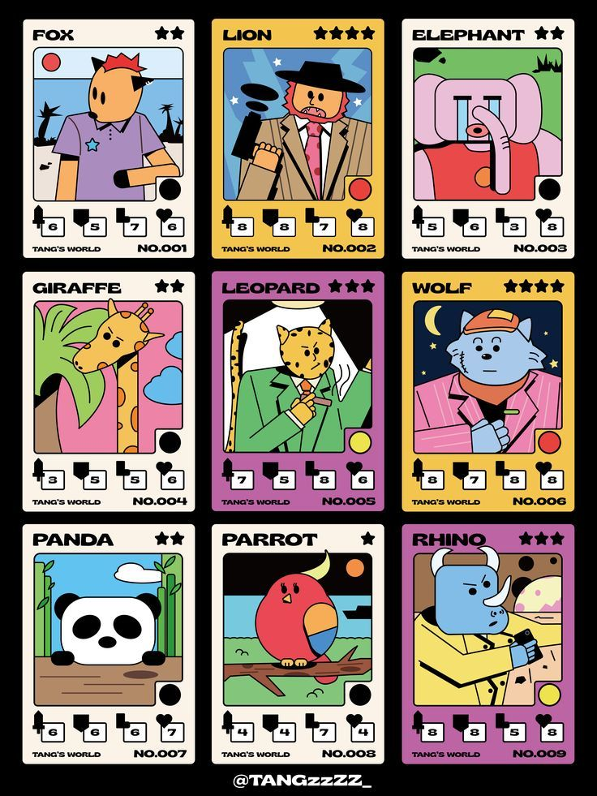

A lightweight, ambient study-presence app for the friends you already have — see who's live, what they're working on, and study alongside them without scheduling anything.
Running list of v2 decisions and ideas from scoping conversations, not yet slotted into specific weeks in the roadmap below. Logged here as they come up so they don't only exist in chat history.
A small-scale visual library in the selected soft-brutalism variant (Mint + Sky Blue, from projectv1/neobrutalism-soft-variants.html, option 3) — components in every state, not just a color list. Not yet wired into study-hub/.
Two rules the panel above can't show on its own: grayscale (per-person toggle, not system-wide) desaturates accent/accent2 to two distinct grays and keeps status dots in the same darkest-to-lightest order, so meaning still reads without hue. And the card's face-down state covers both offline and idle — only "active" flips to face-up; the flip itself is the live signal, not a user gesture.
DELETE listener, symmetric to the existing INSERT one for adds) but no toast or message ever says "you were removed" — the entry just disappears from the list. Neither side learns who removed whom, without needing removal to be one-sided (a one-sided version was tried briefly and reverted — it solved the wrong problem, since the actual ask was "no notification," not "no shared state change").user_id = auth.jwt()->>'sub', same pattern as profiles), plus a position/order column for the drag-reorder — no cross-user authorization logic needed at all, unlike friendships or presence.localStorage flag) or every time someone isn't signed in.Supabase (Postgres) — profiles, friendships tables; row-level security scoped to friend relationships
Clerk (username/password, no email) — linked to Supabase via Third-Party Auth, not the deprecated JWT-template approach
Supabase Realtime Presence + Realtime Authorization — live status broadcast scoped by friendship, no polling
Supabase Edge Functions (scheduled) for check-in timeout logic — not yet built
Next.js (App Router)
Vercel
Web Push (VAPID) if/when out-of-app notifications are revisited — not in current scope
Reference for the collectible-card look (stat icons, rarity stars, card number) — not our exact style, just the structural idea of a trading-card face.

Art: "Tang's World" by @TANGzzZZ_ — credited, not ours.
Students juggling school alongside other responsibilities (jobs, clubs, leadership roles) who already have an existing friend group they'd study with — not strangers matched by an algorithm. The first version is scoped to a closed friend graph: people the founder already interacts with, who opt in by creating an account via a shared link.
The underlying pattern this targets: people who find starting a study session the hardest part, whose motivation dips when days blend together, who doomscroll instead of starting, and who've found that lightweight parallel/"body doubling" presence — not a scheduled call, just knowing someone else is also working — helps them begin and stick with it.
Notes from early discovery conversations with people in the target friend group, describing how they currently handle studying and focus — in their own words.
Friend 1
The last time they tried to do homework, they ended up napping instead — too tired to focus, even with the laptop open. They genuinely enjoy their coursework but often don't start until the last minute. They used to study at the Reg, got tired of it, and find Mansueto too intense. They don't like studying with friends because they need quiet, solo space to write essays — but without anyone holding them accountable, they end up doomscrolling. Their own framing: "I need someone or something to be there, but also not."
Friend 2
They can usually lock in for about an hour to ninety minutes before stopping, then take a long break (hours) before returning to do a little more work. When they put something off, it turns into an all-nighter — which they don't mind much since the day itself was enjoyable. They've tried calling friends for mutual accountability, but those calls devolve into hours of off-topic talk, so they've stopped studying with friends altogether. Having work physically in front of them helps more than self-instruction. Their own framing: a wish for "someone to hold me accountable but not there at the same time."
Friend 3
Facing a midterm, they pulled an all-nighter watching lecture recordings at 2x speed across three screens to catch up. Putting off an assignment they knew they needed to start was "nerve-wracking" — lack of motivation and accountability led to doomscrolling, which led to another all-nighter. Studying with others has helped in the past, but mismatched schedules lately have made that hard to arrange. Mostly they just force themselves to sit down and start, with mixed success.
Shared pattern across all three: studying alongside others helps, but scheduling a dedicated session is friction, and fully solo studying collapses into doomscrolling without any accountability. Multiple friends independently described wanting a presence that's accountable "but not there" — i.e. ambient, not a commitment.
Systems deep-dive — the architecture behind the app: the data model, background jobs, real-time sync, and the services it connects to. Design and AI stay functional but intentionally un-polished; this project is not betting on visual refinement or model integration.
Written after a separate course project (unrelated to Study-Hub) burned through a Supabase account's entire egress quota: a cron-scheduled job re-read full tables every run just to diff them against freshly-fetched data, on a schedule with no regard for how little actually changed between runs. These rules are binding for the v2 check-in/timeout job, the only piece of Study-Hub that introduces scheduled background work.
WHERE status = 'active' AND started_at < now() - interval '30 minutes' — never pull every session row to check ages in application code.| Window | Focus | Build |
|---|---|---|
| Nov 3–10 Prep |
De-risk the core technical bet |
|
| Nov 10–17 v1 due |
Thin, real, end-to-end loop |
|
| Nov 17–24 No class (Thanksgiving) |
Hardest remaining piece — give it the most calendar time |
|
| Nov 24–Dec 1 v2 / Project Fair |
Polish for demo |
|